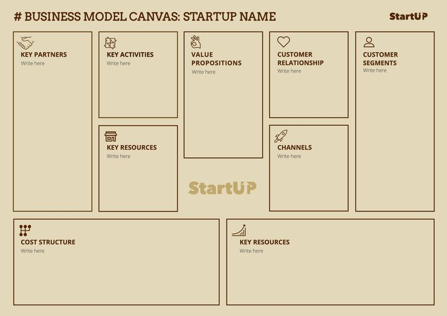

"Strategi Digital Marketing yang Wajib Dikuasai untuk Sukses di Dunia Online"

Di era digital, pemasaran online menjadi elemen penting dalam keberhasilan bisnis. Strategi digital marketing yang efektif mencakup SEO untuk meningkatkan visibilitas di mesin pencari, content marketing untuk menarik audiens dengan konten berkualitas, serta social media marketing yang memanfaatkan platform seperti Instagram dan Facebook untuk membangun engagement dengan pelanggan.
Sabtu, 8 Maret 2025
"Membangun Growth Mindset: Langkah Awal Menuju Kesuksesan"
1 day • January 8, 2025

Apa Itu Business Model Canvas (BMC)?
2 day • January 7, 2025

Mengapa Personal Branding Penting dalam Era Digital?
3 day • January 6, 2025